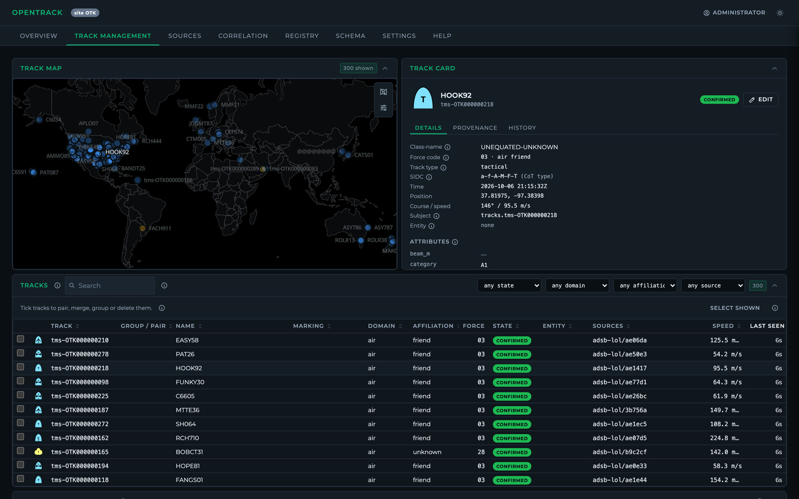
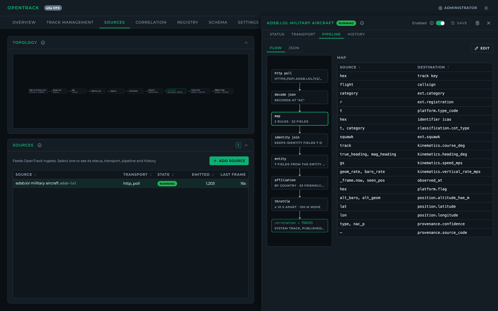
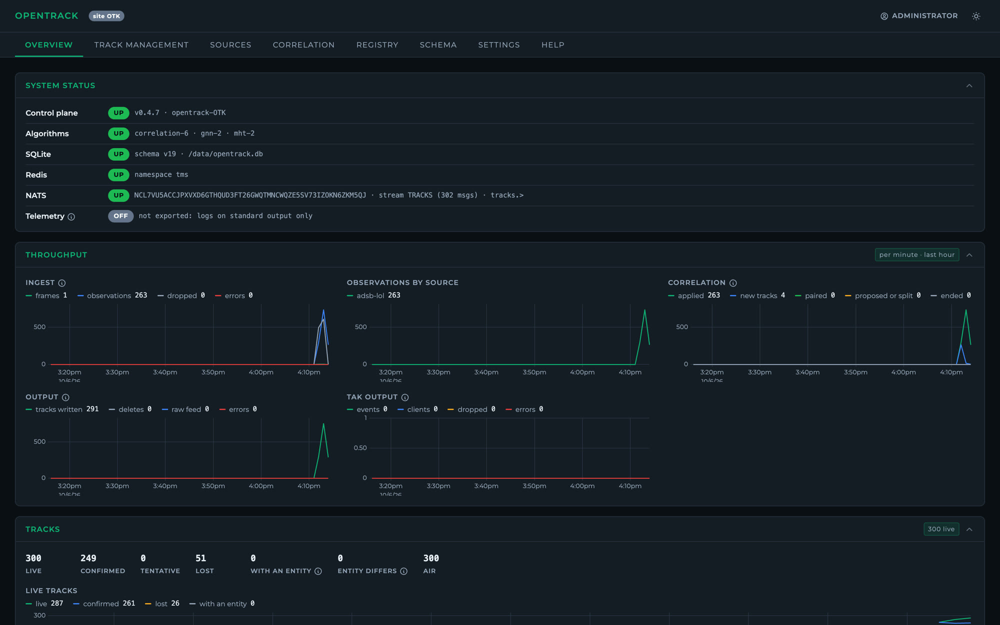

OpenTrack is an open-source tracking and correlation framework for sensor correlation, fusion and track management. Its plugin SDK lets you bring in new algorithms quickly. Operators work in a fast web UI, and autonomous systems can run it headless to coordinate with each other.

OpenTrack sits between data-link gateways and sensor feeds on one side and displays and C2 platforms on the other. It complements both rather than replacing either.
Pick a transport (TCP, UDP multicast, HTTP, WebSocket, MQTT, gRPC) and a codec. OpenTrack probes the feed, infers its schema and suggests a mapping, and a live preview shows the result at every pipeline stage.
GNN and MHT trackers turn raw plots into tracks. The correlator pairs tracks across sources using kinematics and identity, and logs the evidence for every comparison.
Lines of bearing, areas of uncertainty, ELINT ellipses and acoustic bearings are correlated with tracks, using cross-fixes and single-sensor motion analysis.
Designate, pair, merge, split, group and delete, following the OTH-GOLD track database model. Every decision is attributed and can be undone. Includes a MIL-STD-2525D symbol designer.
Ships, shore sites and drone swarms sync with no leader node. Each object keeps one ID across a network split and rejoin, within a bandwidth budget you set.
FIPS 140-3 cryptography, ASD STIG controls, a hash-chained audit log, OpenTelemetry export, signed images and an accreditation document set.
Each video is a test run through the real engine and scored against ground truth: recorded sensor data from a ferry in Trondheim, and synthetic ESM and acoustic scenarios.
A web UI for onboarding feeds, watching the pipeline and managing the picture. It also runs headless when there's no one to watch it.


Run it with Docker, open localhost:8090, and add a feed from the UI or from one of the worked examples.
# clone and configure the first admin git clone https://github.com/kineticlogic-io/OpenTrack.git cd OpenTrack cat > .env <<'EOF' OT_ADMIN_EMAIL=you@example.com OT_ADMIN_PASSWORD=Choose-A-Long-Passw0rd! OT_NATS_URL=nats://nats:4222 EOF # OpenTrack, Redis and a local NATS docker compose --profile dev-nats up --build # add live military aircraft from adsb.lol curl -X POST -H 'content-type: application/json' \ --data @docs/examples/adsb-lol.json \ localhost:8090/api/v1/sources
OpenTrack is built by kineticlogic.io. We help teams integrate it: custom codecs and data links, multi-node deployments, tuning correlation for your sensors, and accreditation support. To start a conversation, email us.